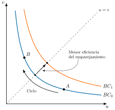
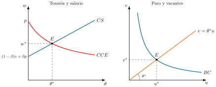
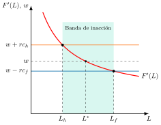
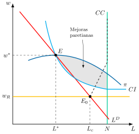
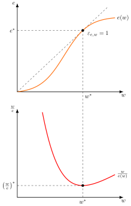
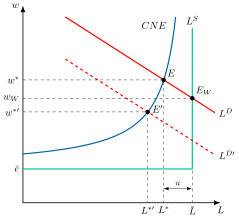

Apuntes para la oposición al Cuerpo de Diplomados Comerciales del Estado
12 Teorías microeconómicas del mercado de trabajo (II). La curva de Beveridge, el modelo de búsqueda y emparejamiento y costes de ajuste. Mención a los modelos de negociación, salarios de eficiencia y contratos implícitos.
12.1 Introducción  1'
1'
En el primer trimestre de 2026, la tasa de paro en España era del 10,2 %, y sin embargo había unas 158.000 vacantes, 0,63 por cada cien activos, que las empresas no conseguían cubrir.1 Esa coexistencia, que se repite en todas las economías, es imposible en el modelo neoclásico, en el que el salario se ajusta hasta vaciar el mercado y el único desempleo es voluntario.2
Las teorías microeconómicas que se estudiarán nacen de abandonar tres supuestos de ese modelo: la información perfecta, el ajuste de la plantilla sin coste y el salario como mecanismo de vaciado del mercado.
Por consiguiente, el objetivo de la presente exposición es analizar por qué el mercado laboral no se ajusta a las predicciones del modelo competitivo a través del siguiente esquema:
La curva de Beveridge y el modelo de búsqueda y emparejamiento, que explican el desempleo friccional.
Los costes de ajuste, que convierten la demanda de trabajo en un problema dinámico.
Una mención a las teorías de la rigidez salarial: modelos de negociación, salarios de eficiencia y contratos implícitos.
12.2 Desempleo friccional: la curva de Beveridge y el modelo de búsqueda y emparejamiento 9'30"
Si la información fuera perfecta y los intercambios instantáneos, ningún puesto quedaría vacante mientras hubiera un parado dispuesto a ocuparlo. Al abandonar ese supuesto aparece el desempleo friccional.
Desempleo friccional
El desempleo friccional es el que se debe al tiempo que tardan trabajadores y empresas en encontrarse y en formalizar una relación laboral, aunque haya puestos disponibles para todos ellos.3
La curva de Beveridge
La relación entre paro y vacantes lleva el nombre de William Beveridge, que ya en 1944 advertía que el pleno empleo no podía significar un paro nulo, porque siempre habría personas cambiando de un trabajo a otro, y lo definía como la situación en la que hay “más empleos vacantes que hombres parados, y no un poco menos” (Beveridge 1944, 18). Sin embargo, quien primero la representó no fue él, sino Dow y Dicks-Mireaux (1958), con datos británicos de 1946 a 1956 (Elsby et al. 2015, 571).
Curva de Beveridge
La curva de Beveridge es la relación decreciente y convexa que se observa a lo largo del ciclo entre la tasa de paro, \(u\), y la tasa de vacantes, \(v\), ambas medidas en proporción a la población activa.4 El cociente entre ambas, la tensión del mercado de trabajo, \(\theta=v/u\), indica cuántas vacantes hay por cada parado.
Gráficamente, en un plano de tasa de paro, \(u\), y tasa de vacantes, \(v\), como el de la Figura 12.1, se representan dos curvas de Beveridge, \(BC_{0}\) y \(BC_{1}\), y la bisectriz, \(u=v\). Así:
Los cambios en la actividad desplazan la economía a lo largo de una misma curva: en las recesiones las empresas abren pocas vacantes y el paro es alto, como en el punto \(A\), y en las expansiones ocurre lo contrario, como en el punto \(B\).
Los desplazamientos de la curva reflejan cambios en la eficiencia con la que se emparejan parados y vacantes o en el ritmo al que se destruyen empleos. Cuanto más alejada del origen está, como \(BC_{1}\) frente a \(BC_{0}\), más paro coexiste con cada nivel de vacantes, lo que suele interpretarse como un deterioro estructural del emparejamiento por desajustes de cualificación, sectoriales o geográficos (Cahuc et al. 2014, 574-76).5
Dow y Dicks-Mireaux leían la curva en términos de exceso de demanda de trabajo, y en esa lectura su corte con la bisectriz se toma a menudo como aproximación al paro friccional, porque en él hay una vacante por cada parado. El pleno empleo de Beveridge exigía situarse por encima de ella.

Implicaciones de política económica
La distinción tiene una implicación de política directa. Si la economía se mueve a lo largo de la curva, el paro es cíclico y responde a las políticas de demanda. Si la curva se desplaza hacia fuera, el problema está en el emparejamiento y lo que procede son políticas activas de empleo, como la intermediación de los servicios públicos de empleo, la formación de los parados o el fomento de la movilidad geográfica.
Evidencia empírica española
La experiencia española ilustra ambos movimientos. Con una serie homogénea de vacantes desde 1980, Boscá et al. (2017) muestran que la curva se desplazó hacia fuera en 2008 y 2009 por una pérdida de eficiencia del emparejamiento, y que desde 2014 ha ido recuperando gradualmente su posición anterior a la crisis. Aun así, el mercado español sigue lejos del pleno empleo de Beveridge. Desde mediados de 2022 la tasa de vacantes oscila en torno a 0,6 por cada cien activos con una tasa de paro superior al 10 %, es decir, unos dieciséis parados por cada vacante, y los parados de larga duración, que son los que peor se emparejan, siguen siendo 900.000, el 38 % del total, aunque su número casi se ha reducido a la mitad desde 2021 (Felgueroso et al. 2026, 3-4).
Ahora bien, la curva solo describe la relación entre paro y vacantes, no la explica. ¿Por qué un parado no acepta la primera vacante que encuentra? La respuesta está en los modelos de búsqueda.
Los modelos de búsqueda
La respuesta empezó a construirse con George Stigler, que denunció que la teoría económica apenas prestaba atención a la información (Stigler 1961, 213). Su punto de partida es una observación sencilla: un mismo trabajo se paga de forma distinta en empresas distintas, porque nadie conoce todas las ofertas, y encontrar la mejor exige buscar, lo que cuesta tiempo y dinero. En el mercado de trabajo, el parado decide de antemano cuántas ofertas examinar, tantas como sea necesario para que lo que espera ganar con una oferta más iguale lo que le cuesta conseguirla (Stigler 1962).6
Una década después, McCall (1970) y Mortensen (1970) sustituyeron esa regla por otra más realista, la búsqueda secuencial. El parado recibe ofertas de una en una, a una tasa \(a\), con salarios, \(w\), extraídos de una distribución conocida, \(H(w)\), y ante cada oferta decide si la acepta o sigue buscando. La estrategia óptima consiste en aceptar cualquier oferta que supere un umbral, el salario de reserva, y rechazar el resto (Cahuc et al. 2014, 262).
Salario de reserva
El salario de reserva, \(w_{R}\), es el salario mínimo con el que a un parado le compensa aceptar un empleo en lugar de seguir buscando.7 Si se llama \(z\) a la renta neta del parado, que incluye la prestación y descuenta los costes de buscar, \(r\) al tipo de interés y \(\lambda\) a la tasa a la que se destruyen los empleos, el salario de reserva cumple \[w_{R}=z+\dfrac{a}{r+\lambda}\cdot\int^{\infty}_{w_{R}}\left(w-w_{R}\right)dH(w) \tag{12.1}\] donde el último término es el valor esperado y descontado de lo que una nueva búsqueda puede aportar por encima del salario de reserva (Cahuc et al. 2014, 264). Como el parado sale del paro cuando recibe una oferta y esta supera su umbral, la duración media del paro, \(T_{u}=1/\left\{ a\cdot\left[1-H\left(w_{R}\right)\right]\right\}\), es mayor cuanto más alto es el salario de reserva.8
Implicaciones de política económica
Una prestación más generosa eleva \(z\) y, con él, el salario de reserva y la duración del paro, de modo que el seguro de desempleo genera un problema de riesgo moral.9 Por eso su diseño combina la protección de la renta con incentivos a aceptar empleo, como una cuantía decreciente con la duración o la exigencia de búsqueda activa. En España, la prestación contributiva se paga al 70 % de la base reguladora durante los primeros 180 días y al 60 % a partir del día 181.10
Paradoja de Diamond
La paradoja de Diamond es el resultado según el cual, si las empresas fijan los salarios y los trabajadores tienen costes de búsqueda, todas las empresas pagan el salario de reserva y desaparece la dispersión salarial que justificaba buscar (Diamond 1971).11 El problema de fondo es que la distribución de salarios, \(H(w)\), se toma como dada, y deja de ser coherente en cuanto se modeliza el comportamiento de las empresas (Cahuc et al. 2014, 304-6).
Las respuestas siguieron dos caminos: introducir heterogeneidad o búsqueda desde el empleo (Burdett y Mortensen 1998) en los modelos en los que la empresa anuncia el salario, o suponer que el salario se negocia una vez que trabajador y empresa se han encontrado.12 Este segundo camino, en el que las empresas también buscan y el salario se negocia, es el de los modelos de emparejamiento, que culminan en el modelo DMP.
El modelo de búsqueda y emparejamiento de Diamond, Mortensen y Pissarides
Diamond, Mortensen y Pissarides, que recibieron el Premio Nobel de Economía de 2010 por su análisis de los mercados con fricciones de búsqueda, llevaron la búsqueda al equilibrio del mercado de trabajo: buscan a la vez los parados y las empresas con vacantes, y el salario se negocia una vez que se encuentran (Diamond 1982; Pissarides 1985). En la versión básica de Pissarides (2000, cap. 1), trabajadores y empresas son idénticos, cada empresa tiene un solo puesto, que produce \(p\) cuando está ocupado y cuesta \(p\cdot c\) por unidad de tiempo mientras está vacante, y los empleos se destruyen a una tasa exógena, \(\lambda\).13
Función de emparejamiento
La función de emparejamiento es la relación que da el número de contratos que se firman por unidad de tiempo en función del número de parados y de vacantes, \(m=m(u,v)\).14 Se supone creciente en ambos argumentos, cóncava y con rendimientos constantes a escala, y la evidencia la respalda: Petrongolo y Pissarides (2001, 393) sitúan su elasticidad respecto al paro, \(\eta\), entre 0,5 y 0,7. Con rendimientos constantes, todo depende de la tensión, \(\theta\). Una vacante se cubre a la tasa \(q(\theta)=m/v\), decreciente en \(\theta\), y un parado encuentra empleo a la tasa \(\theta\cdot q(\theta)=m/u\), creciente en \(\theta\). Cada nueva vacante facilita así que los parados encuentren empleo, pero dificulta que se cubran las demás vacantes. Son las externalidades de congestión del modelo.
El equilibrio queda determinado por tres relaciones.
Curva de Beveridge
En estado estacionario, los empleos que se destruyen, \(\lambda\cdot(1-u)\), igualan a los parados que encuentran empleo, \(\theta\cdot q(\theta)\cdot u\), de donde \[u=\dfrac{\lambda}{\lambda+\theta\cdot q(\theta)} \tag{12.2}\] que es la curva del apartado anterior, ahora derivada de los flujos: el paro es mayor cuanto más alta es la tasa de destrucción y cuanto menos eficiente es el emparejamiento.
Curva de creación de empleo
Las empresas abren vacantes mientras les resulte rentable, y con libre entrada el valor de una vacante se anula. Entonces, el coste esperado de cubrir un puesto, \(p\cdot c/q(\theta)\), que es el coste de la vacante por su duración media, debe igualar el valor de un puesto ocupado, que es el beneficio, \(p-w\), descontado al tipo de interés más la tasa de destrucción: \[\dfrac{p\cdot c}{q(\theta)}=\dfrac{p-w}{r+\lambda} \tag{12.3}\] La relación entre salario y tensión es decreciente, porque un salario más alto hace menos rentable cada empleo y se abren menos vacantes. Desempeña el papel de la demanda de trabajo.
Curva salarial
Empresa y trabajador se reparten el excedente que genera el emparejamiento mediante la solución de Nash, en la que el poder de negociación del trabajador es \(\beta\), y el resultado es \[w=(1-\beta)\cdot z+\beta\cdot p\cdot(1+c\cdot\theta) \tag{12.4}\] El salario crece con la tensión porque, cuanto más fácil es encontrar otro empleo, mejor es la posición negociadora del trabajador.15 Con un poder de negociación nulo, el salario se iguala a la renta del parado, \(z\), como en la paradoja de Diamond.16
Gráficamente, en dos planos, uno de tensión, \(\theta\), y salario, \(w\), y otro de tasa de paro, \(u\), y tasa de vacantes, \(v\), como los de la Figura 12.2, se representan la curva de creación de empleo, \(CCE\), y la curva salarial, \(CS\), en el primero, y la curva de Beveridge, \(BC\), y el rayo \(v=\theta^{*}\cdot u\) en el segundo. Así:
El corte de la curva de creación de empleo con la curva salarial determina la tensión, \(\theta^{*}\), y el salario, \(w^{*}\), de equilibrio.
El rayo \(v=\theta^{*}\cdot u\) corta la curva de Beveridge en las tasas de paro y de vacantes de equilibrio, \(u^{*}\) y \(v^{*}\).
El paro de equilibrio es positivo aunque el salario sea plenamente flexible, porque es desempleo friccional en sentido estricto.17

Implicaciones de política económica
Una prestación más generosa, que eleva \(z\), desplaza hacia arriba la curva salarial, reduce la tensión y aumenta el paro, y lo mismo ocurre si aumenta el poder de negociación de los trabajadores (Cahuc et al. 2014, 597-99). Un aumento de la productividad eleva el salario, pero eleva más la rentabilidad de crear empleo, y el paro baja.18 Un emparejamiento menos eficiente o una destrucción de empleo más rápida alejan la curva de Beveridge del origen y elevan el paro, que es lo que tratan de evitar las políticas activas de empleo.
Condición de Hosios
La condición de Hosios es la que hace eficiente el equilibrio del modelo: el poder de negociación de los trabajadores debe coincidir con la elasticidad de la función de emparejamiento respecto al paro, \(\beta=\eta\) (Hosios 1990).19 Si los trabajadores tienen más poder del que indica esa elasticidad, las empresas abren pocas vacantes y el paro es mayor que el socialmente óptimo, y si tienen menos, ocurre lo contrario (Cahuc et al. 2014, 602). Nada garantiza, por tanto, que el paro de equilibrio sea el eficiente, lo que abre la puerta a la intervención pública.20
Evidencia empírica
El modelo DMP es hoy el marco de referencia del análisis del mercado de trabajo, y su contraste empírico más conocido es también su crítica más seria. Shimer (2005) mostró que en Estados Unidos la desviación típica de la tensión, \(v/u\), es casi veinte veces la de la productividad, mientras que el modelo con salarios negociados predice volatilidades parecidas.21 Es el puzle de la volatilidad del paro, y una de las respuestas más extendidas, desde Hall (2005), ha sido introducir rigidez salarial en el modelo (Cahuc et al. 2014, 613-16). En España, el modelo ayuda a entender el peso de la tasa de destrucción, \(\lambda\): las finalizaciones de contrato explican dos tercios de las salidas del empleo hacia el paro o la inactividad, y junto con los despidos, en torno al 90 % (Felgueroso et al. 2026, 4).
Ahora bien, el modelo supone que, una vez encontrado el trabajador, el empleo se crea o se destruye al instante y sin coste. En la realidad, contratar y despedir cuesta, y esos costes cambian por completo la forma en que se ajusta el empleo.
12.3 Costes de ajuste y dinámica de la demanda de trabajo 4'
El modelo neoclásico supone que la empresa ajusta su plantilla de forma instantánea, de modo que el empleo responde de inmediato a cualquier cambio del salario o de la productividad. Con costes de ajuste, la demanda de trabajo se convierte en un problema dinámico: la empresa no solo decide cuánto empleo quiere, sino a qué ritmo llegar a él.
Costes de ajuste
Los costes de ajuste son los costes en que incurre la empresa al variar su plantilla, como los de selección, contratación y formación de los nuevos trabajadores o las indemnizaciones por despido.22 Se distinguen los costes internos, que son pérdidas de eficiencia mientras la empresa se reorganiza, de los externos, como los honorarios de una agencia o las indemnizaciones, y los costes brutos, ligados a cada entrada y salida de trabajadores, de los netos, ligados a la variación neta del empleo (Cahuc et al. 2014, 119-20).23
La idea se remonta a Oi (1962), que trató el trabajo como un factor cuasifijo. Si contratar y formar a un trabajador exige un coste fijo, la empresa lo amortiza a lo largo de la relación laboral y mantiene al trabajador mientras su productividad marginal cubra el salario, aunque no cubra el coste total. Los trabajadores más cualificados, en cuya formación la empresa ha invertido más, sufren por eso menos despidos en las recesiones.
Formalmente, la empresa elige la senda del empleo, \(L_{t}\), que maximiza el valor descontado de sus beneficios, que son la producción, \(F(L_{t})\), menos los salarios, \(w\cdot L_{t}\), y menos el coste de ajuste, \(C(\dot{L}_{t})\), que depende de la variación del empleo, \(\dot{L}_{t}\): \[\max_{\{L_{t}\}}\int^{\infty}_{0}e^{-rt}\cdot\left[F(L_{t})-w\cdot L_{t}-C(\dot{L}_{t})\right]dt\] La dinámica del empleo depende de la forma de \(C\). Con costes cuadráticos, la forma que introdujeron Holt et al. (1960) y que suele usarse en su versión simétrica, \(C=(b/2)\cdot\dot{L}^{2}_{t}\), donde \(b\) mide la intensidad del coste (Cahuc et al. 2014, 121), ajustar deprisa es más caro que ajustar poco a poco, y la empresa reparte el ajuste en el tiempo: el empleo converge gradualmente a su nivel óptimo. Este caso explica que el empleo reaccione con retraso a la producción y que la productividad aparente del trabajo sea procíclica, porque en las recesiones las empresas retienen mano de obra que no necesitan.
Los costes cuadráticos implican, sin embargo, ajustes pequeños y continuos, mientras que los datos muestran ajustes bruscos alternados con periodos sin cambios. Por eso la literatura posterior prefiere costes lineales y asimétricos, con un coste por cada contratación, \(c_{h}\), y otro por cada despido, \(c_{f}\) (Nickell 1986). La empresa contrata hasta que la productividad marginal iguala el salario más el coste de contratación anualizado, y despide hasta que la iguala el salario menos el coste de despido anualizado: \[F'(L_{h})=w+r\cdot c_{h}\qquad\qquad F'(L_{f})=w-r\cdot c_{f}\]
Gráficamente, en un plano de empleo, \(L\), y productividad marginal y salario, \(F'(L)\) y \(w\), como el de la Figura 12.3, se representan la productividad marginal del trabajo, \(F'(L)\), el salario, \(w\), con el que se contrataría sin costes hasta \(L^{*}\), y los umbrales \(w+r\cdot c_{h}\) y \(w-r\cdot c_{f}\).24 En él:
Si el empleo de partida es menor que \(L_{h}\), la productividad marginal supera el umbral de contratación y la empresa contrata hasta \(L_{h}\).
Si es mayor que \(L_{f}\), la productividad marginal queda por debajo del umbral de despido y la empresa despide hasta \(L_{f}\).
Entre \(L_{h}\) y \(L_{f}\) se abre una banda de inacción: a la empresa no le compensa modificar el empleo, que se queda donde estaba (Cahuc et al. 2014, 126-28).

Implicaciones de política económica
Los costes de despido estabilizan el empleo, pero no tienen un efecto claro sobre su nivel medio. En un entorno incierto, al encarecer el despido la empresa despide menos en las recesiones, pero también contrata menos en las expansiones, porque anticipa que más adelante tendrá que despedir. Bentolila y Bertola (1990) mostraron que el primer efecto domina ligeramente, de modo que los costes de despido pueden incluso elevar algo el empleo medio a largo plazo, aunque reducen la rotación de trabajadores (Cahuc et al. 2014, 133-35).
Evidencia empírica española
El caso español muestra que lo decisivo puede ser la diferencia de costes entre contratos. En España, el despido improcedente de un trabajador indefinido se indemniza con 33 días de salario por año trabajado, con un máximo de 24 mensualidades, mientras que la extinción de un contrato temporal da derecho a 12 días por año.25 Con esa dualidad, el ajuste recae sobre los temporales. Bentolila et al. (2012) estiman, con un modelo de búsqueda calibrado, que España habría evitado alrededor del 45 % del aumento del paro durante la Gran Recesión si hubiera tenido la legislación francesa de protección del empleo: el paro, del 8 % en ambos países antes de la crisis, subió al 10 % en Francia y al 23 % en España. La reforma laboral de 2021 atacó esa dualidad limitando el contrato temporal a las circunstancias de la producción y a la sustitución de trabajadores, y fomentando el contrato fijo discontinuo.26 La tasa de temporalidad de los asalariados ha bajado del 25,4 % a finales de 2021 al 15,1 % en el segundo trimestre de 2026.27 Desde finales de 2019, el empleo indefinido ha crecido un 31,4 % y el temporal ha caído un 33,2 % (Felgueroso et al. 2026, 2).
Hasta aquí, el salario se ha tomado como dado o como resultado de una negociación sin fricciones. Queda por explicar por qué, cuando hay paro, no baja lo suficiente para vaciar el mercado.
12.4 Mención a las teorías de la rigidez salarial 4'30"
Las respuestas a esa pregunta comparten una idea: el salario deja de ser un precio que se ajusta libremente. Lo negocian empresa y sindicato, lo fija la empresa por encima del de mercado para que sus trabajadores rindan más, o se pacta de forma implícita como un seguro. Varias de ellas generan, además, paro involuntario: trabajadores dispuestos a trabajar al salario vigente, o incluso a uno menor, que no encuentran empleo.
Modelos de negociación
La teoría de la negociación salarial parte de Hicks (1932), que explicaba el salario pactado por la capacidad de cada parte para aguantar una huelga. La curva de concesión de la empresa, el salario que está dispuesta a aceptar, crece con la duración de la huelga, y la de resistencia del sindicato, el salario que exige, decrece con ella. El salario se fija en su cruce y, si ambas partes lo prevén, la huelga no llega a producirse (Cahuc et al. 2014, 414-15).
Nash (1950) dio después a la negociación su solución axiomática, que el juego de ofertas alternativas de Rubinstein (1982) permitió fundamentar como resultado de un comportamiento estratégico (Cahuc et al. 2014, 416-22).28
En su versión generalizada, aplicada a un sindicato y a una empresa, la solución maximiza el producto de lo que gana cada parte respecto a su situación sin acuerdo, ponderado por su poder de negociación.29 Llamando \(V(w,L)\) a la utilidad del sindicato, \(\pi(w,L)\) al beneficio de la empresa, \(\bar{V}\) y \(\bar{\pi}\) a sus valores sin acuerdo y \(\beta\) al poder de negociación del sindicato: \[\max\left[V(w,L)-\bar{V}\right]^{\beta}\cdot\left[\pi(w,L)-\bar{\pi}\right]^{1-\beta}\] Los modelos de negociación colectiva aplican esta solución y se distinguen por lo que se negocia.
Modelo de derecho a gestionar
En el modelo de derecho a gestionar de Nickell y Andrews (1983), el sindicato y la empresa negocian solo el salario, y la empresa elige después el empleo sobre su curva de demanda. Con todo el poder de negociación en manos del sindicato, el modelo se reduce al sindicato monopolista de Dunlop (1944), y sin poder alguno, al resultado competitivo.
Gráficamente, en un plano de empleo, \(L\), y salario, \(w\), como el de la Figura 12.4, se representan la demanda de trabajo, \(L^{D}\), el salario de reserva, \(w_{R}\), el número de afiliados, \(N\), una isobeneficio de la empresa, \(\pi\), una curva de indiferencia del sindicato, \(CI\), y la curva de contrato, \(CC\). Así:
Sin poder sindical, el acuerdo es el competitivo, \(E_{0}\), sobre la demanda y al salario de reserva.
Con poder sindical, el acuerdo de derecho a gestionar, \(E\), tiene un salario mayor y menos empleo, y es ineficiente: la curva de indiferencia y la isobeneficio se cortan, y entre ellas queda una zona de mejoras paretianas sin explotar (Cahuc et al. 2014, 433-35).
Si la función de ingresos de la empresa es isoelástica, la elasticidad de la demanda de trabajo es constante, el salario negociado no responde a las perturbaciones y todo el ajuste recae en el empleo.30

Modelo de contrato eficiente
McDonald y Solow (1981) mostraron que esa ineficiencia desaparece si se negocian a la vez el salario y el empleo.31 El acuerdo se sitúa entonces sobre la curva de contrato, \(CC\), de la Figura 12.4, donde se tocan las curvas de indiferencia y las isobeneficio, a la derecha de la demanda de trabajo, y con trabajadores aversos al riesgo hay más empleo que en la situación competitiva.32
Implicaciones de política económica
En el modelo de contrato eficiente, la moderación salarial no crea empleo, y un mayor poder sindical puede incluso aumentarlo. En la práctica, sin embargo, el salario suele negociarse antes que el empleo y de forma más centralizada, por lo que ambos modelos se interpretan como casos límite de un mismo marco (Cahuc et al. 2014, 440-41).33
Modelo de insiders-outsiders
El modelo de insiders-outsiders de Lindbeck y Snower (1988) parte de que la negociación no representa por igual a todos los trabajadores. Los insiders, que ya tienen empleo, negocian con la empresa, mientras que los outsiders, parados o con contratos más precarios, quedan fuera. El poder de los insiders procede de los costes de rotación, como los de contratar, formar o despedir: sustituirlos por outsiders dispuestos a trabajar por menos le cuesta a la empresa, y mientras ese coste supere la diferencia salarial no le compensa hacerlo (Lindbeck y Snower 2001). En su versión más sencilla, si contratar a un outsider cuesta \(c_{h}\) y despedir a un insider \(c_{f}\), el salario de los insiders, \(w_{I}\), puede superar al de los outsiders, \(w_{O}\), hasta en la suma de ambos costes: \[w_{I}=w_{O}+c_{h}+c_{f}\]
El modelo explica así que haya paro involuntario, porque los outsiders trabajarían por menos pero la empresa no los contrata, y también que el paro persista. Tras una caída de la demanda, los despedidos pasan a ser outsiders y dejan de contar en la negociación, y los insiders que quedan fijan salarios que solo protegen sus propios puestos (Romer 2019, 549).34
Su implicación de política es reducir el poder de los insiders y facilitar la entrada de los outsiders: abaratar los costes de rotación, permitir que las empresas se descuelguen de los convenios cuando lo necesiten y mejorar la formación de los parados. En España, la dualidad entre indefinidos y temporales es la versión más clara de esta división, porque los temporales soportan la mayor parte del ajuste.35
Salarios de eficiencia
Salario de eficiencia
El salario de eficiencia es el salario que la empresa fija por encima del que vaciaría el mercado porque la productividad de sus trabajadores depende de lo que les paga.36 Las razones pueden ser la reducción de la rotación (Salop 1979), la selección de mejores candidatos (Weiss 1980), la reciprocidad de quien se siente bien tratado, que Akerlof (1982) llamó intercambio de regalos, o la disuasión del escaqueo (Shapiro y Stiglitz 1984).
Solow (1979) mostró el resultado común a todas ellas. Si el esfuerzo de los trabajadores, \(e(w)\), crece con el salario, la empresa elige el salario que minimiza el coste de cada unidad de esfuerzo, \(w/e(w)\), y lo encuentra donde la elasticidad del esfuerzo respecto al salario es unitaria (Romer 2019, 525): \[\dfrac{e'(w)\cdot w}{e(w)}=1\]
Gráficamente, en dos planos, uno de salario, \(w\), y esfuerzo, \(e\), y otro de salario y coste por unidad de esfuerzo, \(w/e\), como los de la Figura 12.5, se representan la función de esfuerzo, \(e(w)\), y el coste por unidad de esfuerzo, \(w/e(w)\). En ellos:
El salario de eficiencia, \(w^{*}\), es aquel en el que un rayo desde el origen es tangente a la función de esfuerzo, donde la elasticidad es unitaria.
En ese mismo salario, el coste por unidad de esfuerzo alcanza su mínimo, \((w/e)^{*}\).
Ese salario no depende de la demanda de trabajo, de modo que las perturbaciones se trasladan al empleo y no al salario real.37

Shapiro y Stiglitz (1984) dieron a la idea un fundamento de riesgo moral. La empresa no observa el esfuerzo y solo puede despedir a quien sorprende escaqueándose, pero con pleno empleo el despedido encontraría otro trabajo enseguida y el despido no disciplinaría a nadie. La curva de no escaqueo, \(CNE\), da para cada nivel de empleo el salario mínimo que hace que no compense escaquearse, y es creciente porque, cuanto menor es el paro, menos cuesta perder el empleo.
Gráficamente, en un plano de empleo, \(L\), y salario, \(w\), como el de la Figura 12.6, se representan la oferta de trabajo con información simétrica, \(L^{S}\), horizontal en \(\bar{e}\) hasta el pleno empleo, \(\bar{L}\), la curva de no escaqueo, \(CNE\), y la demanda de trabajo, \(L^{D}\). Así:
El equilibrio, \(E\), está en el corte de la curva de no escaqueo con la demanda, con un salario, \(w^{*}\), superior a \(\bar{e}\) y un empleo, \(L^{*}\), inferior al pleno empleo.
La diferencia entre \(\bar{L}\) y \(L^{*}\) es paro involuntario: los parados trabajarían al salario vigente, pero no pueden comprometerse de forma creíble a no escaquearse. El paro actúa así como mecanismo de disciplina.38
Una caída de la demanda de trabajo, de \(L^{D}\) a \(L^{D\prime}\), desplaza el equilibrio de \(E\) a \(E^{\prime}\) a lo largo de la curva de no escaqueo: bajan el salario y el empleo y aumenta el paro (Romer 2019, 540).
Implicaciones de política económica
El equilibrio es además ineficiente. Con pleno empleo, la productividad marginal del trabajo supera lo que a los trabajadores les cuesta esforzarse, de modo que lo óptimo sería que todos trabajaran y se esforzaran. El Estado no puede lograrlo obligando a las empresas a contratar hasta el pleno empleo: sin paro que discipline, los trabajadores se escaquearían y la producción se hundiría. Lo que sí mejora el bienestar es un subsidio al empleo financiado con impuestos de suma fija o sobre los beneficios. El subsidio desplaza hacia arriba la demanda de trabajo, y la economía sube a lo largo de la curva de no escaqueo, con más salario y más empleo. Como el valor de la producción adicional supera su coste de oportunidad, el bienestar aumenta. El reparto de esa ganancia entre trabajadores y empresas depende de cómo se financie el subsidio (Romer 2019, 541).

Evidencia empírica
El ejemplo clásico es el de Henry Ford, que en 1914 duplicó el salario de sus trabajadores hasta cinco dólares diarios. Según Raff y Summers (1987), la rotación anual en la fábrica pasó del 370 % en 1913 al 16 % en 1915 y el absentismo diario cayó del 10 % al 2,5 %, con aumentos notables de la productividad.39
Contratos implícitos
La teoría de los contratos implícitos, desarrollada por Baily (1974), Azariadis (1975) y Gordon (1974), explica la rigidez salarial como un seguro. Los trabajadores son aversos al riesgo y no pueden asegurar su renta en los mercados financieros, mientras que la empresa, que sí tiene acceso a ellos, se comporta como neutral al riesgo.40 El contrato óptimo, que no está escrito y se sostiene en la reputación de la empresa, garantiza al trabajador una renta estable a lo largo del ciclo a cambio de un salario medio algo menor, y deja que el ajuste recaiga en las horas o en el empleo. La teoría explica así la rigidez del salario real, pero no el paro involuntario. En el contrato óptimo, la empresa no elige el empleo tomando el salario como dado. Lo fija el propio contrato, en el nivel en que la productividad marginal del trabajo iguala a la desutilidad marginal, es decir, a lo que al trabajador le cuesta trabajar una hora más, y nadie queda sin trabajar contra su voluntad. Lo que sí puede haber es paro aparente: en las recesiones se trabaja menos por la misma renta, el salario por hora resulta alto y los trabajadores querrían trabajar más a ese salario, aunque el contrato sea óptimo (Romer 2019, 545-47).
Evidencia empírica española
Los ERTE de la pandemia aplicaron el mismo principio desde lo público: en el peor momento llegaron a cubrir a unos 3,6 millones de trabajadores, cuya renta quedó asegurada mientras el ajuste recaía en las horas y no en el empleo.41
12.5 Conclusiones  30"
30"
Como conclusión, encontrar empleo lleva tiempo, cambiar de plantilla cuesta y el salario no siempre es un precio que vacía el mercado. Esta lección está hoy más viva que nunca:
Tecnología: las plataformas digitales de empleo y la inteligencia artificial pueden mejorar la eficiencia del emparejamiento y acercar la curva de Beveridge al origen, pero también destruir empleos y exigir cualificaciones nuevas que la alejen. ¿Qué efecto dominará?
Desajuste: los 900.000 parados de larga duración son el reflejo más claro de un emparejamiento que falla. Si ese desajuste es estructural, no se corrige bajando salarios, sino con formación, intermediación y movilidad.
Vivienda: si los parados no pueden trasladarse a donde están las vacantes porque la vivienda es cara o escasa, el emparejamiento empeora. El mercado de trabajo y el de la vivienda están más conectados de lo que parece.
Transición ecológica: el cierre de sectores intensivos en carbono y el auge de otros es una perturbación de reasignación de manual, que puede alejar la curva de Beveridge del origen durante años. ¿Está preparada la política de empleo para recolocar a los trabajadores afectados?
Apéndice
12.A.1. El salario de reserva en el modelo de búsqueda secuencial
Se trabaja en tiempo continuo con la notación del cuerpo del tema (Cahuc et al. 2014, 262-64). Un trabajador empleado con salario \(w\) pierde su empleo a la tasa \(\lambda\), de modo que el valor de estar empleado, \(V_{e}(w)\), cumple \[r\cdot V_{e}(w)=w+\lambda\cdot\left[V_{u}-V_{e}(w)\right]\qquad\Longrightarrow\qquad V_{e}(w)=\dfrac{w+\lambda\cdot V_{u}}{r+\lambda}\] donde \(V_{u}\) es el valor de estar parado. El parado obtiene la renta \(z\) y recibe ofertas a la tasa \(a\), que acepta si le dan un valor mayor que seguir buscando: \[r\cdot V_{u}=z+a\cdot\int^{\infty}_{0}\max\left\{ V_{e}(w)-V_{u},0\right\} dH(w)\]
El salario de reserva es el que deja al parado indiferente, \(V_{e}(w_{R})=V_{u}\). Sustituyendo en la expresión de \(V_{e}\) se obtiene \(w_{R}=r\cdot V_{u}\), y por tanto \(V_{e}(w)-V_{u}=(w-w_{R})/(r+\lambda)\), que es positivo solo para las ofertas que superan el salario de reserva. Llevando estos dos resultados a la ecuación de \(V_{u}\) se llega a la ecuación ( 12.1) del cuerpo: \[w_{R}=z+\dfrac{a}{r+\lambda}\cdot\int^{\infty}_{w_{R}}\left(w-w_{R}\right)dH(w)\]
Como el parado sale del paro cuando recibe una oferta y esta supera su umbral, la tasa de salida del paro es \(a\cdot\left[1-H(w_{R})\right]\) y la duración media del paro, su inversa. Diferenciando la ecuación anterior respecto a \(z\) se obtiene el efecto de la prestación: \[\dfrac{\partial w_{R}}{\partial z}=\dfrac{1}{1+\dfrac{a}{r+\lambda}\cdot\left[1-H(w_{R})\right]}\in(0,1)\] de modo que una prestación más alta eleva el salario de reserva, aunque menos que proporcionalmente, y alarga la duración media del paro.
12.A.2. El equilibrio del modelo de Diamond, Mortensen y Pissarides
Se sigue la versión básica de Pissarides (2000, cap. 1). Para la empresa, el valor de una vacante, \(V\), y el de un puesto ocupado, \(J\), cumplen \[r\cdot V=-p\cdot c+q(\theta)\cdot\left(J-V\right)\qquad\qquad r\cdot J=p-w-\lambda\cdot J\] La vacante cuesta \(p\cdot c\) por unidad de tiempo y se cubre a la tasa \(q(\theta)\), y el puesto ocupado produce \(p\), paga \(w\) y se destruye a la tasa \(\lambda\). Con libre entrada, \(V=0\), de modo que \(J=p\cdot c/q(\theta)\), y como \(J=(p-w)/(r+\lambda)\), se obtiene la curva de creación de empleo, ( 12.3).
Para el trabajador, el valor de estar parado, \(U\), y el de estar empleado, \(W\), cumplen \[r\cdot U=z+\theta\cdot q(\theta)\cdot\left(W-U\right)\qquad\qquad r\cdot W=w+\lambda\cdot\left(U-W\right)\] El salario resuelve el problema de Nash, \(\max_{w}\left(W-U\right)^{\beta}\cdot\left(J-V\right)^{1-\beta}\), cuya condición de primer orden es \((1-\beta)\cdot(W-U)=\beta\cdot(J-V)\): el trabajador se queda con una fracción \(\beta\) del excedente total del emparejamiento. Como \((r+\lambda)\cdot(W-U)=w-r\cdot U\) y \((r+\lambda)\cdot J=p-w\), la regla de reparto da \[w=(1-\beta)\cdot r\cdot U+\beta\cdot p\] y, sustituyendo \(W-U=\beta\cdot J/(1-\beta)\) y \(J=p\cdot c/q(\theta)\) en la ecuación de \(U\), se obtiene \(r\cdot U=z+\beta\cdot p\cdot c\cdot\theta/(1-\beta)\). Llevando este valor a la expresión del salario resulta la curva salarial, ( 12.4).
Eliminando el salario entre la curva de creación de empleo y la curva salarial se obtiene la condición que determina la tensión de equilibrio: \[(1-\beta)\cdot(p-z)=\left[r+\lambda+\beta\cdot\theta\cdot q(\theta)\right]\cdot\dfrac{p\cdot c}{q(\theta)} \tag{12.5}\] El primer miembro no depende de \(\theta\) y el segundo es creciente en \(\theta\), porque \(q(\theta)\) es decreciente y \(\theta\cdot q(\theta)\) creciente, así que el equilibrio, \(\theta^{*}\), es único. Con \(\theta^{*}\), la curva de Beveridge, ( 12.2), da la tasa de paro, \(u^{*}\), y las vacantes son \(v^{*}=\theta^{*}\cdot u^{*}\). La estática comparativa del cuerpo se lee directamente en esta ecuación: un aumento de \(z\) o de \(\beta\) reduce el primer miembro de la ecuación o eleva el segundo, y con ello reduce la tensión de equilibrio, mientras que un aumento de \(p\) la eleva, porque el coste de la vacante, \(p\cdot c\), crece en la misma proporción que \(p\) pero \(z\) no.
12.A.3. La demanda de trabajo con costes de ajuste
Con costes cuadráticos, \(C(\dot{L}_{t})=(b/2)\cdot\dot{L}^{2}_{t}\), el problema de la empresa se resuelve con el hamiltoniano en valor presente, en el que la variable de control es \(x_{t}=\dot{L}_{t}\) y \(\mu_{t}\) es la variable de coestado: \[H=e^{-rt}\cdot\left[F(L_{t})-w\cdot L_{t}-\dfrac{b}{2}\cdot x^{2}_{t}\right]+\mu_{t}\cdot x_{t}\] La condición \(\partial H/\partial x_{t}=0\) da \(\mu_{t}=e^{-rt}\cdot b\cdot x_{t}\), y la ecuación de la coestado, \(\dot{\mu}_{t}=-\partial H/\partial L_{t}=-e^{-rt}\left[F'(L_{t})-w\right]\). Derivando la primera respecto al tiempo e igualando con la segunda se obtiene la ecuación de Euler (Cahuc et al. 2014, 123-24): \[F'(L_{t})=w+r\cdot b\cdot\dot{L}_{t}-b\cdot\ddot{L}_{t}\] En el estado estacionario, \(\dot{L}=\ddot{L}=0\) y se recupera la condición estática, \(F'(L^{*})=w\). Linealizando alrededor de \(L^{*}\), la senda estable es \(L_{t}=L^{*}+(L_{0}-L^{*})\cdot e^{\nu t}\), con \(\nu=\left[r-\sqrt{r^{2}+4\kappa}\right]/2<0\) y \(\kappa=-F''(L^{*})/b>0\). Cuanto mayor es el coste de ajuste, \(b\), menor es \(\kappa\), menor es el valor absoluto de \(\nu\) y más lento es el ajuste.
Con costes lineales y asimétricos, contratar a un trabajador cuesta \(c_{h}\) una sola vez y despedirlo, \(c_{f}\). Contratar un trabajador más compensa si el valor actual de lo que aporta, \(\left[F'(L)-w\right]/r\), supera el coste de contratarlo, y despedirlo compensa si el ahorro, \(\left[w-F'(L)\right]/r\), supera el coste del despido. Los umbrales son, por tanto, \[F'(L_{h})=w+r\cdot c_{h}\qquad\qquad F'(L_{f})=w-r\cdot c_{f}\] y la demanda de trabajo, a partir de un empleo inicial \(L_{0}\), es \(L=L_{h}\) si \(L_{0}<L_{h}\), \(L=L_{0}\) si \(L_{h}\leq L_{0}\leq L_{f}\) y \(L=L_{f}\) si \(L_{0}>L_{f}\) (Cahuc et al. 2014, 126-27). En este caso determinista, un aumento de \(c_{f}\) desplaza \(L_{f}\) hacia la derecha y amplía la banda de inacción sin afectar al umbral de contratación. El caso con incertidumbre se estudia en el apartado siguiente.
12.A.4. Los costes de ajuste con incertidumbre
Con incertidumbre, la empresa decide la plantilla de hoy pensando en las perturbaciones futuras, y sus expectativas pasan a determinar la senda del empleo. Si los costes son cuadráticos y la empresa forma expectativas racionales, la demanda de trabajo en tiempo discreto cumple \[L_{t}=\varphi\cdot L_{t-1}+\mu_{0}\cdot\sum^{\infty}_{i=0}\left(a_{0}\cdot\mu_{0}\right)^{i}\cdot E_{t}\,a_{t+i}\] En ella, \(a_{t}\) mide la rentabilidad del empleo en cada periodo, que crece con la perturbación de productividad y cae con el salario, y \(E_{t}\) son las expectativas formadas en \(t\). Los parámetros \(\varphi\), \(\mu_{0}\) y \(a_{0}\) dependen de la tecnología, del tipo de interés y del coste de ajuste, \(b\). El coeficiente \(\varphi\), entre cero y uno, crece con \(b\), de modo que, cuanto más cuesta ajustar, más pesa el empleo pasado (Cahuc et al. 2014, 128-31). El empleo depende así del pasado, a través de los costes de ajuste, y del futuro esperado, a través de las expectativas. Una perturbación transitoria apenas altera lo que se espera de los periodos siguientes y mueve poco el empleo. Una permanente, en cambio, desplaza todas las expectativas y provoca un ajuste mayor, aunque gradual.
Con costes lineales, la productividad alterna entre un estado bueno, \(A_{G}\), y uno malo, \(A_{B}\). Se pasa del bueno al malo con probabilidad instantánea \(q_{G}\) y del malo al bueno con \(q_{B}\). La empresa mantiene un empleo \(L_{G}\) en el estado bueno y \(L_{B}\) en el malo, que cumplen \[F_{L}(A_{G},L_{G})=w_{G}+q_{G}\cdot c_{f}+(r+q_{G})\cdot c_{h}\qquad\qquad F_{L}(A_{B},L_{B})=w_{B}-q_{B}\cdot c_{h}-(r+q_{B})\cdot c_{f}\] En el estado bueno, la productividad marginal debe cubrir el salario, el coste de contratar y también el coste esperado de despedir cuando el ciclo cambie. Por eso \(L_{G}\) cae con los dos costes. Simétricamente, \(L_{B}\) sube con ambos: un despido caro frena los despidos en las recesiones, y una contratación cara también, porque la empresa sabe que tendrá que volver a contratar en la recuperación. Los costes de ajuste estabilizan así el empleo, y la rotación, \(\tau\), que es la suma de empleos creados y destruidos, \[\tau=\frac{2\cdot q_{G}\cdot q_{B}}{q_{G}+q_{B}}\cdot\left(L_{G}-L_{B}\right)\] cae cuando el mercado de trabajo se vuelve más rígido (Cahuc et al. 2014, 132-34).
12.A.5. La condición de Hosios
El planificador elige la tensión para maximizar el valor descontado de la producción neta, que es lo que producen los ocupados, más la renta de los parados, menos los costes de las vacantes, sujeto a la dinámica del paro: \[\max_{\{\theta_{t}\}}\int^{\infty}_{0}e^{-rt}\cdot\left[p\cdot(1-u_{t})+z\cdot u_{t}-p\cdot c\cdot\theta_{t}\cdot u_{t}\right]dt\qquad\text{s.a.}\qquad\dot{u}_{t}=\lambda\cdot(1-u_{t})-\theta_{t}\cdot q(\theta_{t})\cdot u_{t}\] En este problema, \(z\) recoge solo el valor del ocio o de la producción doméstica, y no transferencias como la prestación por desempleo, que únicamente redistribuyen (Cahuc et al. 2014, 601). Llamando \(\eta=-\theta\cdot q'(\theta)/q(\theta)\) a la elasticidad de la función de emparejamiento respecto al paro, las condiciones de optimalidad en el estado estacionario se reducen a \[(1-\eta)\cdot(p-z)=\left[r+\lambda+\eta\cdot\theta\cdot q(\theta)\right]\cdot\dfrac{p\cdot c}{q(\theta)}\] que tiene la misma forma que la condición de equilibrio, ( 12.5), con \(\eta\) en el lugar de \(\beta\) (Hosios 1990). Las dos coinciden, y el equilibrio es eficiente, si y solo si \(\beta=\eta\), siempre que la renta del parado del equilibrio no incluya tampoco la prestación por desempleo. Con una prestación positiva, el primer miembro de la condición de equilibrio es menor que en el óptimo y, aunque se cumpla \(\beta=\eta\), la tensión es demasiado baja y el paro, demasiado alto (Cahuc et al. 2014, 601). Si \(\beta>\eta\), el primer miembro de la condición de equilibrio es menor y el segundo mayor que en el óptimo, la tensión es demasiado baja y el paro, demasiado alto, y si \(\beta<\eta\), ocurre lo contrario (Cahuc et al. 2014, 600-602).
12.A.6. La solución de Nash en la negociación colectiva
La empresa obtiene unos ingresos \(R(L)\), cóncavos, y su beneficio es \(\pi=R(L)-w\cdot L\), con una demanda de trabajo dada por \(R'(L)=w\), cuya elasticidad respecto al salario, en valor absoluto, es \(\varepsilon_{L}\). El sindicato tiene \(N\) afiliados y es utilitarista: cada empleado obtiene \(u(w)\) y cada parado \(u(w_{R})\), con \(u\) cóncava. Sin acuerdo, la empresa no produce y los afiliados obtienen \(u(w_{R})\), de modo que las ganancias de cada parte son \(L\cdot\left[u(w)-u(w_{R})\right]\) y \(\pi\) (Cahuc et al. 2014, 431-37).
En el modelo de derecho a gestionar se negocia solo el salario, y el empleo lo fija la empresa sobre su demanda, \(L=L^{D}(w)\). El problema es \(\max_{w}\beta\cdot\ln\left\{ L^{D}(w)\cdot\left[u(w)-u(w_{R})\right]\right\} +(1-\beta)\cdot\ln\pi(w)\). Como \(d\pi/dw=-L\), la condición de primer orden, multiplicada por \(w\), da \[\dfrac{u(w)-u(w_{R})}{w\cdot u'(w)}=\dfrac{\beta}{\beta\cdot\varepsilon_{L}+(1-\beta)\cdot\dfrac{w\cdot L}{\pi}}\] Con \(\beta=1\) se obtiene el sindicato monopolista de Dunlop, que con neutralidad al riesgo fija \(w=w_{R}/\left(1-1/\varepsilon_{L}\right)\), un margen sobre el salario de reserva. Si los ingresos son isoelásticos, \(R(L)=A\cdot L^{\alpha}\), se cumple \(\varepsilon_{L}=1/(1-\alpha)\) y \(w\cdot L/\pi=\alpha/(1-\alpha)\), ambos constantes: el salario negociado es proporcional al de reserva y no responde a las perturbaciones de \(A\), que recaen por entero en el empleo.
En el modelo de contrato eficiente se negocian el salario y el empleo, y el acuerdo está sobre la curva de contrato, donde la relación marginal de sustitución del sindicato iguala la de la empresa: \[R'(L)=w-\dfrac{u(w)-u(w_{R})}{u'(w)}\] Como \(u(w)>u(w_{R})\), se cumple \(R'(L)<w\) y el acuerdo está a la derecha de la demanda de trabajo. Con neutralidad al riesgo, \(u(w)=w\), la condición se reduce a \(R'(L)=w_{R}\): la curva de contrato es vertical en el empleo competitivo y la negociación solo reparte la renta. Con aversión al riesgo, la concavidad de \(u\) implica \(u(w)-u(w_{R})>u'(w)\cdot(w-w_{R})\), de modo que \(R'(L)<w_{R}\) y hay sobreempleo respecto al nivel competitivo.
12.A.7. El paro de equilibrio con salarios de eficiencia
Se sigue a Romer (2019, 528-30), que formaliza una idea de Summers (1988). La condición de Solow fija el salario de cada empresa, pero no dice cuánto paro hay cuando todas pagan por encima del salario que vaciaría el mercado. Para responder, el esfuerzo debe depender también del salario que pagan las demás empresas, \(w_{a}\), y de la tasa de paro, \(u\): \(e=e(w,w_{a},u)\). El esfuerzo crece con el salario propio y con el paro, porque perder el empleo cuesta más, y cae con el salario de las demás empresas, porque el despido es menos grave si fuera se paga bien. Cada empresa es pequeña y toma \(w_{a}\) y \(u\) como dados, de modo que sigue eligiendo el salario en el que la elasticidad del esfuerzo es unitaria.
Con la forma funcional de Summers, el esfuerzo depende de la prima que el salario propio paga sobre las oportunidades del trabajador fuera de la empresa, \(x\): \[e=\left(\frac{w-x}{x}\right)^{\gamma}\qquad\qquad x=(1-b\cdot u)\cdot w_{a}\] donde \(\gamma\), entre cero y uno, es la elasticidad del esfuerzo respecto a esa prima, y \(b\) mide cuánto pesa el paro en la valoración del trabajador. La condición de Solow da \[w=\frac{x}{1-\gamma}=\frac{1-b\cdot u}{1-\gamma}\cdot w_{a}\] de modo que cada empresa paga una prima aproximadamente igual a \(\gamma\) sobre las oportunidades externas. En equilibrio todas pagan lo mismo, \(w=w_{a}\), lo que solo es posible si \(1-\gamma=1-b\cdot u\), es decir, si \[u=\frac{\gamma}{b}\] Si el paro fuera menor, cada empresa querría pagar más que las demás, el salario subiría y el empleo caería hasta restablecerlo. El paro de equilibrio depende solo de la función de esfuerzo y no de la de producción, de modo que el progreso técnico no lo reduce a largo plazo. Además, bastan elasticidades pequeñas para generar un paro considerable: con \(\gamma=0{,}06\) y \(b=1\), el paro de equilibrio es del 6 % (Romer 2019, 530).
12.A.8. La condición de no escaqueo de Shapiro y Stiglitz
Se sigue la formulación de Romer (2019, 532-39). Un trabajador obtiene utilidad \(w-\bar{e}\) si se esfuerza y \(w\) si se escaquea, y un parado obtiene cero. Los empleos se destruyen a la tasa \(\lambda\), el escaqueo se detecta a la tasa \(q\) y los parados encuentran empleo a la tasa \(a\). Con un tipo de descuento \(\rho\), los valores de estar empleado y esforzarse, \(V_{E}\), de estar empleado y escaquearse, \(V_{S}\), y de estar parado, \(V_{U}\), cumplen \[\rho\cdot V_{E}=(w-\bar{e})-\lambda\cdot\left(V_{E}-V_{U}\right)\qquad\rho\cdot V_{S}=w-(\lambda+q)\cdot\left(V_{S}-V_{U}\right)\qquad\rho\cdot V_{U}=a\cdot\left(V_{E}-V_{U}\right)\]
La empresa paga el salario mínimo que evita el escaqueo, \(V_{E}=V_{S}\). Igualando las dos primeras ecuaciones se obtiene \(V_{E}-V_{U}=\bar{e}/q\): el empleo tiene que valer más que el paro exactamente lo que cuesta el esfuerzo, corregido por la probabilidad de ser descubierto. Restando la tercera ecuación de la primera, \(\rho\cdot(V_{E}-V_{U})=w-\bar{e}-(a+\lambda)\cdot(V_{E}-V_{U})\), y sustituyendo, el salario necesario es \[w=\bar{e}+\left(\rho+a+\lambda\right)\cdot\dfrac{\bar{e}}{q}\]
En estado estacionario, con \(\bar{L}\) trabajadores y \(L\) empleados, las salidas del empleo igualan a las entradas, \(\lambda\cdot L=a\cdot(\bar{L}-L)\), de modo que \(a+\lambda=\lambda\cdot\bar{L}/(\bar{L}-L)\). Sustituyendo se obtiene la curva de no escaqueo: \[w=\bar{e}+\left(\rho+\dfrac{\lambda\cdot\bar{L}}{\bar{L}-L}\right)\cdot\dfrac{\bar{e}}{q}\] que es creciente en el empleo y tiende a infinito cuando \(L\) se acerca a \(\bar{L}\): con pleno empleo ningún salario evita el escaqueo. Si la detección es perfecta, \(q\to\infty\), el salario se reduce a \(\bar{e}\), el de información simétrica.
12.A.9. El contrato implícito óptimo
Se sigue a Romer (2019, 543-47). La productividad toma el valor \(A_{i}\) con probabilidad \(p_{i}\), \(i=1,\ldots,n\). La empresa, neutral al riesgo, paga al trabajador \(C_{i}\) y le pide \(L_{i}\) horas en cada estado, y el trabajador obtiene \(U(C_{i})-V(L_{i})\), con \(U\) cóncava y \(V\) convexa. El contrato maximiza el beneficio esperado sujeto a que el trabajador alcance al menos la utilidad esperada \(u_{0}\), con multiplicador \(\mu\): \[\mathcal{L}=\sum^{n}_{i=1}p_{i}\cdot\left[A_{i}\cdot F(L_{i})-C_{i}\right]+\mu\cdot\left\{ \sum^{n}_{i=1}p_{i}\cdot\left[U(C_{i})-V(L_{i})\right]-u_{0}\right\}\] Las condiciones de primer orden respecto a \(C_{i}\) y a \(L_{i}\) son \[U'(C_{i})=\dfrac{1}{\mu}\qquad\qquad A_{i}\cdot F'(L_{i})=\dfrac{V'(L_{i})}{U'(C)}\] La primera implica que la renta del trabajador es la misma en todos los estados, \(C_{i}=C\): la empresa le asegura por completo. La segunda iguala en cada estado la productividad marginal del trabajo con la relación marginal de sustitución entre ocio y consumo, de modo que el empleo es eficiente. Como el empleo es mayor cuando \(A_{i}\) es alto y la renta es constante, el salario por hora, \(C/L_{i}\), es contracíclico, y no hay paro involuntario.
Términos del glosario de este tema
25 términos · ver el glosario completo
Bibliografía
Datos corregidos de variaciones estacionales y efecto calendario (Felgueroso et al. 2026, 3-4).↩︎
El modelo neoclásico de oferta y demanda de trabajo, que aquí se da por conocido, se desarrolla en el Tema 11 de la Parte A.↩︎
La intuición es que buscar empleo, o buscar a quien contratar, lleva tiempo y cuesta recursos, porque la información sobre qué puestos existen, qué exigen y qué pagan está dispersa y no llega a todos a la vez. Mientras dura esa búsqueda, el trabajador figura como parado y el puesto como vacante.↩︎
La intuición es que, cuando la actividad se acelera, las empresas abren más puestos y una parte de ellos se cubre con parados, de modo que las vacantes suben mientras el paro baja. La convexidad refleja que, en un mercado ya muy tenso, cada vacante adicional encuentra menos parados con los que emparejarse y reduce el paro cada vez menos.↩︎
No todo desplazamiento aparente es estructural. Tras una recesión, la economía suele recorrer un bucle en sentido antihorario alrededor de la curva, porque entre la apertura de una vacante y la contratación pasa tiempo. Por eso Lazear y Spletzer consideraban prematuro atribuir a desajustes el desplazamiento observado en Estados Unidos tras 2009 (Cahuc et al. 2014, 576).↩︎
Esa estrategia no secuencial no es óptima, porque puede llevar a seguir buscando después de haber recibido una oferta superior al salario de reserva. McCall demostró la optimalidad de la regla de parada secuencial (Cahuc et al. 2014, 262).↩︎
La intuición es que aceptar una oferta tiene un coste de oportunidad, que es renunciar a encontrar otra mejor. El salario de reserva es el punto en el que ese coste se iguala con lo que se gana al dejar de buscar.↩︎
La derivación completa del salario de reserva y de la duración media del paro figura en el Apéndice 12.A.1.↩︎
El riesgo moral se estudia en el Tema 13 de la Parte A. La predicción es teóricamente robusta, pero su magnitud es empírica: muchos parados no cobran prestación, y para ellos una prestación más generosa puede reducir el salario de reserva, porque aceptar un empleo da derecho a cobrarla en el futuro (Cahuc et al. 2014, 265).↩︎
Artículo 270.2 del texto refundido de la Ley General de la Seguridad Social, en la redacción dada por la Ley 31/2022, de 23 de diciembre, de Presupuestos Generales del Estado para 2023, en vigor desde el 1 de enero de 2023.↩︎
La intuición es que ninguna empresa gana nada pagando más que el salario de reserva, porque cualquier oferta que lo iguale ya se acepta. Si todas pagan lo mismo, no hay ninguna oferta mejor que buscar, y el salario cae hasta la renta del parado, \(z\).↩︎
En el modelo de Burdett y Mortensen los trabajadores siguen buscando cuando ya tienen empleo, de modo que las empresas compiten por atraerlos y retenerlos. En equilibrio surge una distribución de salarios no degenerada, en la que las empresas que pagan más son también las más grandes (Cahuc et al. 2014, 306).↩︎
Mortensen y Pissarides (1994) endogeneizaron después la destrucción de empleo, que pasa a depender de perturbaciones de productividad específicas de cada puesto, de modo que la creación y la destrucción de empleo se mueven en sentido opuesto a lo largo del ciclo.↩︎
La intuición es que funciona como una función de producción de contratos cuyos factores son los parados y las vacantes. Resume en una sola relación todas las fricciones del mercado, como la información incompleta o los desajustes de cualificación y de localización, sin modelizarlas una a una.↩︎
La intuición es que, en un mercado tenso, el trabajador que rompe la negociación encuentra pronto otro empleo, mientras que la empresa tendría que volver a buscar. El término \(p\cdot c\cdot\theta\) es precisamente el coste medio de contratación por cada parado, y el trabajador se queda con una parte de ese ahorro proporcional a su poder de negociación.↩︎
La derivación de las tres relaciones y del equilibrio figura en el Apéndice 12.A.2.↩︎
El paro de equilibrio del modelo DMP es uno de los fundamentos de la tasa natural de paro, que se estudia en el Tema 11 de la Parte B.↩︎
El resultado depende de que la renta del parado, \(z\), no crezca con la productividad. Si \(z\) y el coste de la vacante crecieran en proporción a los salarios, el nivel de productividad no afectaría al paro a largo plazo (Cahuc et al. 2014, 599).↩︎
La intuición es que cada vacante y cada parado que entran en el mercado congestionan a los de su mismo lado y facilitan la búsqueda a los del otro, y nadie tiene en cuenta esos efectos al decidir. El reparto del salario solo los compensa cuando lo que obtiene cada parte coincide con lo que aporta al emparejamiento, que es lo que mide la elasticidad.↩︎
Cahuc et al. (2014, 600-603) la llaman condición de Hosios-Pissarides. La ineficiencia es propia de la búsqueda aleatoria con salarios negociados: si los trabajadores pueden dirigir su búsqueda hacia los salarios que anuncian las empresas, como en el modelo de Moen, la competencia por atraerlos restaura la eficiencia del equilibrio. La condición supone, además, que la renta del parado solo recoge el valor del ocio. Si incluye una prestación, que para la sociedad es una mera transferencia, el equilibrio genera demasiado paro aunque se cumpla \(\beta=\eta\).↩︎
La desviación típica de la tensión es de 0,38 en los datos y de 0,035 en el modelo calibrado. Además, el modelo predice una elasticidad del salario a la productividad prácticamente unitaria, frente a unos 0,45 en las estimaciones de Hagedorn y Manovskii. Pissarides objeta, sin embargo, que los salarios de los nuevos contratos sí son flexibles (Cahuc et al. 2014, 613-16).↩︎
La intuición es que incorporar a un trabajador no termina al firmar el contrato: hay que buscarlo, seleccionarlo y formarlo, y desprenderse de él también cuesta. Cambiar de plantilla tiene así un precio propio, que se suma al salario.↩︎
Su cuantía varía mucho entre países. En Estados Unidos, reponer a un trabajador cuesta entre el 25 % del salario anual, en los menos cualificados, y más del 100 %, en los más cualificados, y contratar es más caro que despedir. En Francia ocurre lo contrario: según Abowd y Kramarz, una separación cuesta en promedio el 56 % del coste laboral anual y una contratación el 3,3 % (Cahuc et al. 2014, 120).↩︎
La derivación de estos umbrales y de la demanda de trabajo resultante figura en el Apéndice 12.A.3.↩︎
Artículos 56.1 y 49.1.c del texto refundido de la Ley del Estatuto de los Trabajadores. La cuantía del despido improcedente procede de la reforma de 2012 (Real Decreto-ley 3/2012 y Ley 3/2012). El despido objetivo procedente se indemniza con 20 días por año y un máximo de 12 mensualidades (artículo 53.1.b).↩︎
Real Decreto-ley 32/2021, de 28 de diciembre, de medidas urgentes para la reforma laboral, la garantía de la estabilidad en el empleo y la transformación del mercado de trabajo.↩︎
INE, Encuesta de Población Activa del cuarto trimestre de 2021, y Ministerio de Trabajo y Economía Social, a partir de la Encuesta de Población Activa del segundo trimestre de 2026. El Banco de España advierte de que ese descenso no puede atribuirse sin más a la reforma, y de que parte de la rotación se ha trasladado a los fijos discontinuos, cuya tasa de bajas casi se ha duplicado desde 2022 (Banco de España, Informe Anual 2023, capítulo 3).↩︎
Cuando el intervalo entre ofertas tiende a cero, el equilibrio del juego de Rubinstein converge a la solución de Nash generalizada, en la que el poder de negociación de cada parte es mayor cuanto más paciente es, como mostraron Binmore, Rubinstein y Wolinsky. El punto de desacuerdo es entonces lo que cada parte obtiene mientras dura el conflicto, y no sus opciones externas (Cahuc et al. 2014, 421-22).↩︎
Nash exigió a la solución cuatro propiedades. La eficiencia en el sentido de Pareto obliga a que las partes aprovechen todas las ganancias mutuas. La invariancia ante transformaciones afines crecientes de las utilidades hace que el resultado no dependa de cómo se representen las preferencias. La independencia de las alternativas irrelevantes garantiza que, si se descartan acuerdos que de todos modos no se habrían elegido, el resultado no cambia. Por último, la simetría supone que dos partes intercambiables obtienen lo mismo, es decir, que tienen igual poder de negociación. La única solución que cumple las cuatro maximiza el producto de las ganancias netas de las partes. Al suprimir la simetría se obtiene la solución generalizada, en la que el exponente \(\beta\) mide el poder de negociación (Cahuc et al. 2014, 415-16).↩︎
La intuición es que el sindicato fija el salario como un margen sobre el salario de reserva que depende de la elasticidad de la demanda de trabajo. Si la perturbación no altera esa elasticidad, tampoco altera el salario.↩︎
La idea se remonta a Leontief, que ya advirtió que negociar a la vez salario y empleo permite alcanzar acuerdos eficientes (Cahuc et al. 2014, 435).↩︎
Si además se negocian las prestaciones de los parados o las indemnizaciones por despido, el sindicato puede asegurar a sus afiliados frente al riesgo de perder el empleo, y el empleo vuelve al nivel competitivo. Es el contrato fuertemente eficiente, que reconcilia la eficiencia productiva con la eficiencia en el sentido de Pareto (Cahuc et al. 2014, 437-39).↩︎
También importa el nivel en que se negocia. Calmfors y Driffill (1988) encontraron una relación en forma de U invertida entre la centralización de la negociación y el paro: los resultados son mejores con una negociación muy centralizada, que tiene en cuenta sus efectos sobre el conjunto de la economía, o muy descentralizada, disciplinada por la competencia, y peores en los casos intermedios, como la negociación por sectores.↩︎
Este modelo es una de las explicaciones de la persistencia del paro y de la histéresis, que se estudian en el Tema 11 de la Parte B.↩︎
Si la empresa puede pagar salarios distintos a insiders y entrantes, el poder de los insiders genera más discriminación que paro: los entrantes cobran menos, pero el empleo total no cambia. El paro solo aparece cuando la empresa debe pagar a todos el mismo salario (Cahuc et al. 2014, 443-45).↩︎
La intuición es que un salario más alto puede hacer que el trabajador se esfuerce más, que no se marche a otra empresa o que se presenten mejores candidatos. Si esas ganancias compensan el mayor coste, a la empresa le conviene pagar más de lo necesario para contratar.↩︎
El paro de equilibrio que resulta cuando todas las empresas pagan salarios de eficiencia se obtiene en el Apéndice 12.A.7.↩︎
La teoría tiene un punto débil reconocido: si los trabajadores prefieren el empleo al paro, la empresa podría exigirles una fianza que perderían si se les sorprende escaqueándose, o cobrarles por el puesto, y el racionamiento desaparecería. Que esas prácticas apenas se observen es un enigma para el modelo (Romer 2019, 542).↩︎
Los propios autores advierten de que la recesión de 1914 en Detroit pudo explicar parte de la caída de la rotación.↩︎
El supuesto es razonable ante perturbaciones específicas de la empresa, que sus propietarios pueden diversificar, pero no tanto ante las agregadas, que son precisamente las que la teoría quiere explicar (Romer 2019, 544).↩︎
Según la Seguridad Social, el máximo, de 3.608.148 trabajadores, se alcanzó en la primavera de 2020 (comparecencia del Secretario de Estado de la Seguridad Social en el Senado, mayo de 2021).↩︎